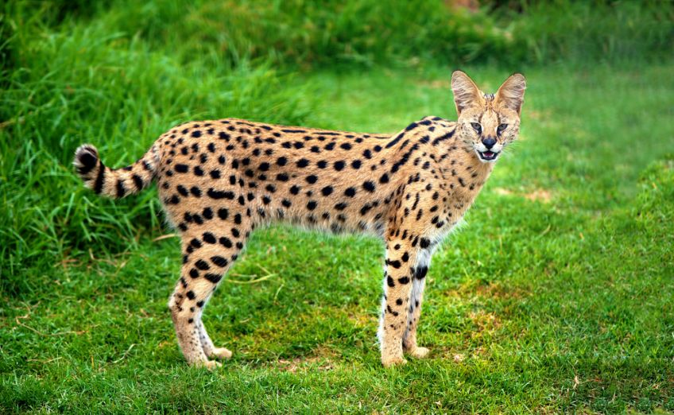

Opis:
Serwal to dziko żyjący kot afrykański. W naturze można go spotkać w głównie Afryce subsaharyjskiej. Uwielbia wysokie trawy i sawanny parkowe. Serwal jest sprytnym i cierpliwym łowcą, oraz doskonałym skoczkiem – potrafi skakać na wysokość 3 metrów w górę. Już w Starożytnym Egipcie próbowano go oswajać. Dzisiaj, chociaż nadal żyje na wolności – ponownie można spotkać go w hodowlach domowych. Przeczytaj, czy każdy może hodować tego kota w domu i czy to na pewno dobry pomysł. Dorosły serwal afrykański z wyglądu przypomina geparda – głównie dzięki charakterystycznemu „makijażowi” biegnącemu od kącików oczu w stronę czarnego nosa. Ciało servala jest smukłe, nogi długie. Waga może wynosić od 8 do 18 kg, a wysokość w kłębie od 60 do 100 cm. Sierść jest krótka i ma barwę piaskową z czarnymi cętkami. Czarne pręgi biegną od głowy przez kark ku grzbietowi. Serwal ma krótki ogon ozdobiony także czarnymi cętkami i pierścieniami. Wyróżniającą cechą servala są ogromne uszy, które sprawiają, że serval posiada doskonały słuch, który jest najważniejszym zmysłem podczas polowania.
Ciekawostki:
Serwale cierpiące na melanizm bardzo przypominają swoim wyglądem czarne pantery.
Serwale są bardzo dobrymi drapieżnikami, jednak w skład ich pożywienia wchodzą głównie małe ssaki i gryzonie. Są one bowiem dość leniwymi zwierzętami.